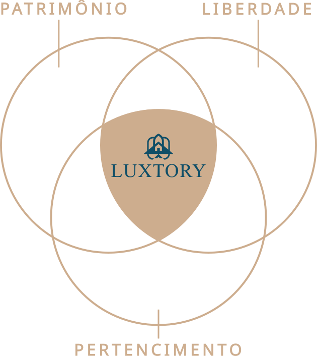

Owner
A administração integral pela Luxtory é opcional, assim como a Taxa de Administração.
As despesas da Second Home são suas.
Uma nova forma de viver seu lazer com mais valor.
Descubra uma nova forma de viverImagem 1 de 3
No mercado de lazer, tudo gira em torno de três valores: patrimônio, liberdade e pertencimento.
Você quer os três, mas as alternativas ainda costumam fazer você abrir mão de uma parte importante para ter as outras.

Entrega patrimônio e pertencimento, mas limita a liberdade a um destino, e responsabilidades de gestão e manutenção do imóvel.
A locação de temporada ou hoteleira oferece liberdade, mas dificilmente pertencimento e certamente não constrói patrimônio.
Entrega patrimônio com eficiência, mas dificilmente liberdade e pertencimento na mesma experiência.
No fim, você acaba sendo levado a escolher qual parte importa mais.
Não porque seja impossível reunir os três.
Mas porque as alternativas foram construídas separadamente.
Essa é a nossa lógica.
Newsreader nas headlines. Hanken Grotesk no corpo e na interface. Foundations e primitives gerais são candidatos ao Core. As composições editoriais são patterns B2C. O isolamento técnico deste Lab é temporário; nenhuma página do produto foi migrada.
Subheadline · contexto com presença, sem competir com a headline.
Body · leitura contínua, largura consistente e conteúdo preservado. Os tamanhos propostos são globais, sem escalas inventadas por seção.
Small · legenda e informação complementar.
Marker · Hanken, somente quando orienta.
Existem marcas com as quais você se identifica não apenas pelo que elas vendem.
Mas pelo universo que representam.
E tudo isso ganha ainda mais significado quando é vivido com sua família, seus amigos e as pessoas que importam para você.

Começa por um lifestyle com o qual você se identifica.

Começa por um lifestyle com o qual você se identifica.
A imagem demonstra composição e crop. O Kaizen é apresentado como referência conceitual identificada; não como Edition disponível ou evidência de outro Concept.
Imagine ter um lugar que represente quem você é.
Onde possa fazer o que ama, com quem ama.
Diagrama de solução Luxtory.svg: integração das três dimensões. Geometria original; apenas fonte, cor canônica e contraste adaptados.

A administração integral pela Luxtory é opcional, assim como a Taxa de Administração.
As despesas da Second Home são suas.
A administração profissional é obrigatória, com Taxa de Administração.
As despesas da Second Home são rateadas entre os Co-Owners.
A Second Home inteira é sua.
Propriedade e gestão
Patrimônio real.
Você possui uma participação real que faz sentido para sua vida.
Propriedade e gestão
Patrimônio real.
Um patrimônio para chamar de seu.
Liberdade para continuar descobrindo novos lugares, experiências e histórias.
E pertencimento para sentir que cada experiência tem a ver com a vida que você deseja viver.
Um patrimônio para chamar de seu.
Liberdade para continuar descobrindo novos lugares, experiências e histórias.
E pertencimento para sentir que cada experiência tem a ver com a vida que você deseja viver.
Créditos não são moeda, investimento nem garantia de disponibilidade.
Campos genéricos de avaliação visual. Não são definição de cadastro, qualificação ou Interesse.
Um segundo candidato permite avaliar presença de pessoas, proporção e crop no desktop e no mobile.
K09 · imagem conceitual identificada. Referência de convivência; não comprova uma oferta, serviço ou benefício atual.
Consultar a origem no Luxtory2.0
CP1 em avaliação visual. Promoção ao Core e aplicação na Home dependem de aprovação explícita.
Consultar as evidênciasPaleta, tipografia, spacing, grid, borders, foco, interação e primitives gerais são candidatos ao Core Luxtory DS. Hero, splits, comparações, diagramas, statement, listas e fechamentos são patterns B2C. Um pattern só vira componente quando houver consumidor e reutilização justificável.
Hero e Problem usam a implementação da Home de referência. As outras composições seguem as estruturas especificadas pelo fundador. As imagens são candidatas para avaliação privada, incluindo Kaizen K01/K09; nenhuma representa uma Edition disponível, prova de outro Concept, serviço ou benefício atual.
Página completa · 1440px · Página completa · 390px
Hero: imagem 2 · desktop · imagem 2 · mobile · imagem 3 · desktop · imagem 3 · mobile